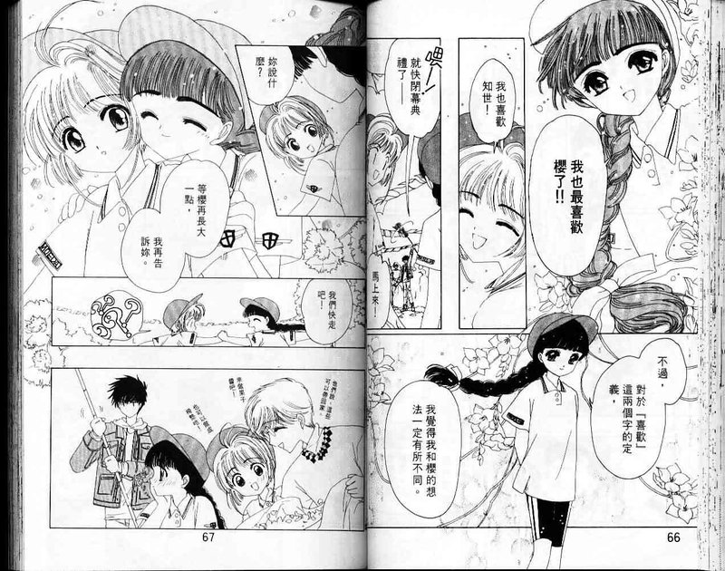

小學四年級的木之本櫻，某日意外在父親的書房打開魔法卡「庫洛牌」的封印， 導致卡牌四散，庫洛牌的封印之獸小可封小櫻為「庫洛魔法使」， 小櫻就此肩負起找回所有庫洛牌的責任。
《 庫洛魔法使》於1996年開始連載，是眾多少女的回憶， CLAMP將她們感情觀畫入漫畫中，為這部少女漫畫增添與眾不同的感情刻畫。
CLAMP主筆大川七瀨說：「這是一個溫柔的故事。」在《庫洛魔法使》誕生之前， CLAMP創作了無數種類型作品，多數涉及社會、末日、靈異等題材，但創作庫洛法使時， 大川七瀨曾表示，她們這次想畫一個對少數群體溫柔的世界，這是她們團隊在創作故事前就有的共識。 女主角小櫻就此誕生，她生活在溫暖的家庭中、擁有最好的朋友、愛戀的對象，以及不尋常的魔法力量。
你可以在《庫洛魔法使》中看見男男戀、女女戀、師生戀， 而小櫻正是CLAMP所賦予，在故事中展現對這些少數人事物友善的體現， 小櫻得知小狼跟自己一樣喜歡雪兔哥時展現坦然的態度， 她並不認為同為男性的小狼追求雪兔是「不健全」的事情， 而是將小狼擺在同等情敵的地位。「想透過小櫻的視角告訴所有少女、所有人， 這不是不正常的事情。」大川七瀨說道。如同小櫻的口頭禪「絕對沒問題」， 在這個溫柔的故事裡，知世對小櫻超出友情的愛、桃矢與雪兔互相救贖的戀情、 利佳與老師的師生戀，任何形式的愛都是「沒問題」的。

處於故事中的所有人物，他們的愛情都不順利，小櫻喜歡長她五歲的雪兔哥， 知世喜歡她最好的朋友小櫻，小狼也對雪兔哥一見鍾情，但雪兔卻喜歡上小櫻的哥哥桃矢， 如此粽錯複雜的情感分支註定會犧牲一些人物感情，進而成全其他，也讓人不禁思考， 帶給少女魔法與愛的漫畫適合這些內容嗎? 事實上，CLAMP至始至終都貫徹「溫柔的故事」的主旨， 人物的情感推進永遠是柔和溫暖的，每一位人物都擁有愛而不得的痛苦、經歷悲傷後的迷惘、 最後釋懷走出過往迎接下一段感情。
例如小櫻向雪兔告白被拒，得知雪兔喜歡哥哥後微笑著支持他， 在離開後卻仍然忍不住滴下眼淚；莓鈴與小狼取消婚約後，在知世懷中放聲哭泣， 說著：「讓人生氣的是，就算如此我仍然不會討厭木之本，因為她是好女孩， 小狼喜歡她也是無可奈何的事。」如此透徹的愛情觀在《庫洛魔法使》中被淋漓盡致的展現， CLAMP用自己的漫畫告訴大家，從此以後，少女漫不再只是男主人公與女主人公相戀的單選題。
《庫洛魔法使》向大家展現少女漫並不「膚淺」，在世界上妳可以為任何人心動， 無關性別、身分、地位，只因為「他是他」，如同Fantine在女人迷發表的文章， 點出《庫洛魔法使》的少女學：「少女，妳可以愛任何人。」